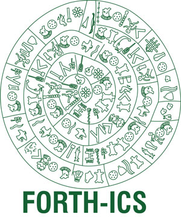

I am a Post-Doctoral Researcher at the Systems Group of ETH Zürich. My research area of interest is in Database Architecture. I obtained a PhD from University of Amsterdam while I was a member of the Database Architecture Group of CWI in Amsterdam. I have been a core developer for the MonetDB open source database system since 2007.
Previous affiliations include:
- 2007-2017 Researcher at the
Database Architectures
group of CWI, Amsterdam.

- In the summer of 2012, I was a research intern at Microsoft Research Lab, in Redmond, WA.
- 2001-2005 Member of the Information Systems Laboratory at ICS-FORTH, Heraklion, Crete. 
My github profile with various repositories such as the stand-alone/simd implementation of Column Imprints.
Most of my free time at work is consumed by
 MonetDB: The column-store pioneer. My contributions to MonetDB include supporting/maintaining the GDK kernel, the join, select, and sampling
operators, bug fixing, the original implementation of column imprints and ordered index, as well as
code for supporting non-relational data models such as RDF and XML.
MonetDB: The column-store pioneer. My contributions to MonetDB include supporting/maintaining the GDK kernel, the join, select, and sampling
operators, bug fixing, the original implementation of column imprints and ordered index, as well as
code for supporting non-relational data models such as RDF and XML.
My PhD research was funded by the Netherlands Organisation for Scientific Research under the project Querying while Transforming Large Graph Databases.
Publications
ACM Digital Library - DBLP - Google ScholarBio
Lefteris Sidirourgos is a postdoctoral researcher at the Systems Group of ETH Zürich. Before that, he was a postdoctoral researcher at the Database Architectures Group of CWI in Amsterdam. He received his Ph.D. in Computer Science from the University of Amsterdam. He also holds a M.Sc. in Computer Science and a B.Sc in Mathematics from University of Crete, Greece. He has been a core developer for the MonetDB open source database system for the past 10 years. He has also worked with other commercial database engines such as Microsoft Hekaton, Actian Vectorwise, and LogicBlox. His main research interests include indexing, storage, compression, sampling, approximate query processing, and graph processing. He always looks for opportunities to expand his research into new areas of computer science.
Invited Talks
Abstract
The large memories available for read-optimized databases have changed the landscape of index creation and exploitation. Instead of complex data structures aimed at fast concurrent OLTP updates, modern column stores rely on fast scans over (sorted) partitions and/or the use of partial indices. In this talk we will present two such indexes, namely imprints and secondary projections. These indexes are designed to alleviate the storage duplication caused by complex primary indexes and support a compact representation of intermediates in the order required for the remainder of the query execution plan. We will also present our vision for a nexus of indexes, where an index is not a stand-alone structure inside a database engine, but part of a series of connections linking two or more indexes. Finally, we will discuss future work on hardware-driven index design that extends across the three layers of shared-memory programming.
Abstract
Big Data comes with huge challenges. Its volume and velocity makes handling, curating, and analytical processing a costly affair. Even to simply “look at” the data within an a priori defined budget and with a guaranteed interactive response time frame might be impossible. Scale-out approaches will hit the technology and monetary wall soon, if not done so already. Blindly dumping data when the channel is full, or reducing the data resolution at the source, might lead to loss of valuable observations. An army of well-educated database administrators or full software stack architects might deal with the challenges, but a seemingly knobless DBMS is to be preferred. A fundamental change in database management is called for. One approach, called data rotting, has been proposed as an alternative solution. For the sake of storage management and responsiveness, it lets the DBMS semi-autonomously rot away data. Rotting is based on the systems own unwillingness to keep old data as easily accessible as fresh data. Our work sheds more light on the opportunities and potential impacts of this radical departure in data management. Specifically, we study the case where a DBMS selectively forgets tuples (by marking them inactive) under various amnesia scenarios and with different implementation strategies. Our final aim is to use the findings of this study to morph an existing data management engine to serve demanding big data scientific applications with well-chosen data amnesia algorithms.
Abstract
In this talk, we are going to iterate over a collection of indexes on the making. Each index serves a different query scenario, but they all have one common design principal. They use just a few bits to decide if a large piece of data needs to be fetched from storage. Transferring data costs, thus each bit that encodes information to avoid unnecessary data transfer is valuable. A frugal database kernel leaves no bits behind. To give one example, we introduce column imprint, a simple but efficient cache conscious secondary index. A column imprint is a collection of many small bit vectors, each indexing the data points of a single cacheline. Next, we will talk about Splited Bloom filters. In this scenario, instead of using a single large Bloom filter, we split it into multiple smaller Bloom filters, each one covering a separate subset of tuples. This makes it possible to adjust the size of the filters and use more bits for subsets that are larger and/or more frequently accessed. Finally, we will present future ideas on how multiple bloom filters can be used to implement unary and binary database operators that work over extra large data sets.
Abstract
Large scale data warehouses rely heavily on secondary indexes, such as bitmaps and b-trees, to limit access to slow IO devices. However, with the advent of large main memory systems, cache conscious secondary indexes are needed to improve also the transfer bandwidth between memory and cpu. In this presentation, we introduce column imprint, a simple but efficient cache conscious secondary index. A column imprint is a collection of many small bit vectors, each indexing the data points of a single cacheline. An imprint is used during query evaluation to limit data access and thus minimize memory traffic. The compression for imprints is cpu friendly and exploits the empirical observation that data often exhibits local clustering or partial ordering as a side-effect of the construction process. Most importantly, column imprint compression remains effective and robust even in the case of unclustered data, while other state-of-the-art solutions fail. We conducted an extensive experimental evaluation to assess the applicability and the performance impact of the column imprints. The storage over- head, when experimenting with real world datasets, is just a few percent over the size of the columns being indexed. The evaluation time for over 40000 range queries of varying selectivity revealed the efficiency of the proposed index compared to zonemaps and bitmaps with WAH compression.
Abstract
Data warehouses underlying virtual observatories stress the capabilities of database management systems in many ways. They are filled on a daily basis with large amounts of factual information, derived from intensive data scrubbing and computational feature extraction pipelines. Querying these huge databases require a sizable computing cluster, while ideally the initial investigation should run interactively on as little resources as possible.
In this talk, we will explore a different route, based on the observation that at any given time only a fraction of the data is of primary value for a specific task. This fraction becomes the focus of scientific reflection through an iterative process of ad-hoc query refinement. We will present SciBORQ, a framework for scientific data exploration that allows precise control over the runtime and the quality of query answering. Novel techniques are presented to derive multiple interesting data samples, called impressions. An impression is selected such that the statistical error of a query answer remains low, while the result can be computed within strict time bounds. Impressions differ from previous sampling approaches in their bias towards the focal point of the scientific data exploration, their multi-layer design, and their adaptiveness to shifting query workload.
Service to the Research Community
Program Committee Member
- 2017 Research Track – 43rd International Conference on Very Large Data Bases (VLDB) 2017
- 2016 Demo Track – 42nd International Conference on Very Large Data Bases (VLDB) 2016
- 2014 2nd International workshop on Benchmarking RDF Systems (BeRSys 2014), co-located with VLDB
Journal Reviewer
- 2010, 2015 IEEE Transactions on Knowledge and Data Engineering (IEEE TDKE)
- 2010, 2011, 2012, 2014 Elsevier Journal of Web Semantics (JWS)
- 2008 Springer Journal of Computer Science and Technology (JCST)
Contact
Email:Dept. of Computer Science
CAB E 73.1, ETH Zürich
Universitätstrasse 6
8092 Zürich, Switzerland